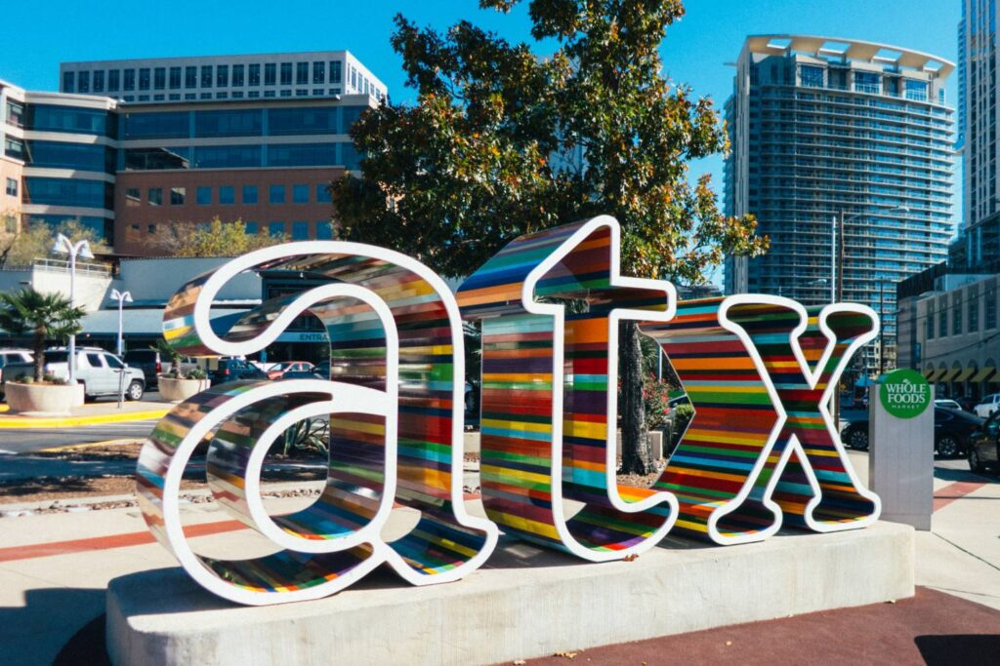

Meet People
Come to happy hours, neighborhood gatherings, and meetings where residents can compare notes.
Join
Whether you live downtown, manage a building, own a business, represent an organization, or simply want to stay informed, there is a practical way to take part.

Your Place Downtown
Membership, updates, volunteering, and partner support all help residents stay connected to the place they call home.
Why Join DANA?
DANA helps you know what is happening, where to show up, and how to take part when something affects downtown life.
Come to happy hours, neighborhood gatherings, and meetings where residents can compare notes.
Your membership helps residents speak clearly on safety, streets, sound, housing, and public space.
Get short notes on transit, building projects, safety, and changes that may affect your block.
Receive occasional notes about meetings, events, issues, and practical neighborhood news.
SubscribeHelp ensure downtown residents continue to have a strong, steady place in civic conversations.
Join DANAFor businesses, buildings, organizations, developers, and sponsors ready to support resident-facing work.
Explore partnerships